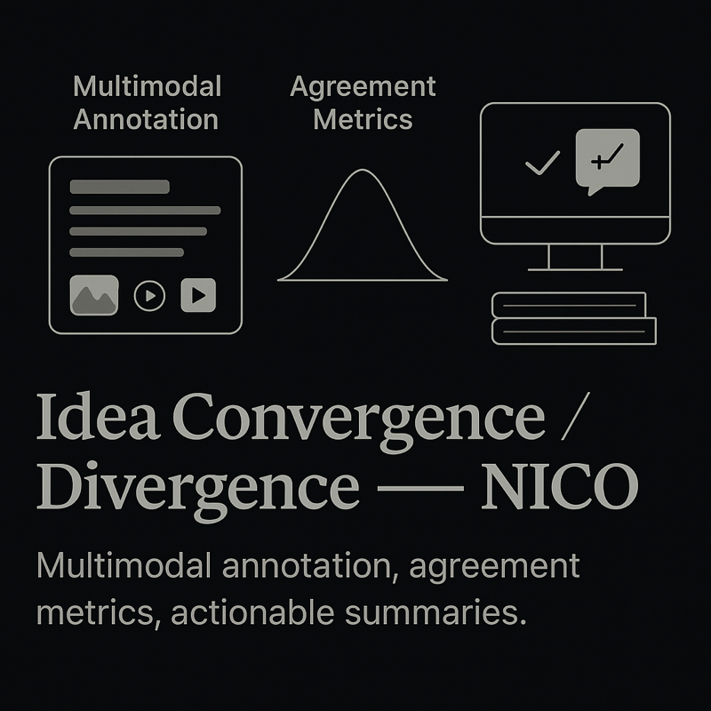

Multimodal Team Science Research — NICO
This ongoing project is conducted with Dr. Evey Huang at the Northwestern Institute on Complex Systems (NICO), in collaboration with Dr. Matt Groh and Prof. Brian Uzzi. We use multimodal AI to study how real-world teams collaborate, with the goal of moving organizations from intuition and annual surveys toward richer, evidence-based measures of what makes teams succeed or fail.
Northwestern University · Ongoing research project
Project overview
This larger research effort builds multimodal AI systems that analyze video, audio, and language from real team interactions. The broader aim is to make hard-to-observe collaboration signals measurable at scale: participation dynamics, turn-taking, idea-building versus blocking behaviors, coordination patterns, and how teams respond to disagreement over time.
One core dataset in the project uses SCIALOG scientific team meetings from 2020 to 2022. Those sessions include timestamped utterances and human annotations for Coordination and Decision Practices (CDP), which make it possible to study how teams organize discussion, make decisions, and form successful collaborations.
What I work on
My contribution sits inside that broader multimodal team-science agenda. I focus on the computational layer that turns meeting transcripts and annotations into analyzable structure, especially around coordination, convergence, and outcome prediction.
- Coordination modeling: measuring how teams mix basic coordination and higher-level decision practices across a meeting.
- Temporal analysis: testing whether teams converge toward narrower coordination strategies over time.
- Fuzzy linkography implementation: building semantic link metrics over sequential utterances to capture global relational structure in discussions.
- Outcome analysis: connecting meeting behavior to whether resulting teams receive funding.
Why the broader project matters
Organizations often care about psychological safety, open collaboration, and healthy decision-making, but they rarely have a reliable way to observe those dynamics in practice. This project treats that gap as both a scientific problem and a systems-design problem: how to build scalable AI measurement grounded in organizational theory rather than surface-level sentiment alone.
Selected findings
In the current analyses, teams generally do not converge to a single focused coordination style by the end of a meeting. Instead, they maintain a relatively stable mix of structuring behavior and decision-making throughout the conversation. A newer fuzzy-linkography layer extends that work by modeling semantic connections between utterances and testing which interaction patterns relate to funded versus unfunded sessions.
Why it matters
Scientific collaboration is not just about good ideas. It also depends on how teams coordinate, distribute decision-making, and connect ideas over time. This work aims to make those interaction patterns measurable so researchers can better understand how productive teams form and how early collaboration dynamics relate to later success.
Related broader project outputs include an in-review Point of View article for the Journal of Organizational Design (2026) and recognition as a finalist in the AI for Organizations Grand Challenge organized by Google DeepMind and Stanford HAI in 2025.
Collaborators: Dr. Evey Huang, Dr. Matt Groh, Prof. Brian Uzzi, and Max Chalekson.